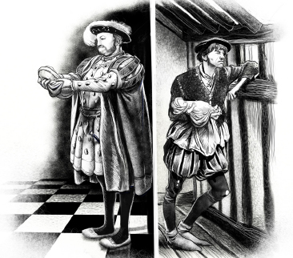

Listen to Part 1:
Nhà vua và người ăn mày chào đời
Gần năm trăm năm trước ở London, cùng một ngày, hai bé trai đã chào đời. Một gia đình mong muốn có đứa con trai của họ rất nhiều. Em bé này mặc những bộ quần áo đẹp, đắt tiền. Gia đình và rất nhiều người hầu chăm sóc cậu bé. Cậu bé là Edward Tudor, vị vua tương lai của nước Anh.
Mọi người ở Anh đều muốn có đứa bé này. Khi cậu bé ra đời, cả đất nước vô cùng vui mừng. Cả nước nghỉ lễ và mọi người đều mở tiệc mừng lớn. Mọi người hôn nhau và nhảy múa trên phố.
Gia đình của đứa bé trai kia rất nghèo và họ không muốn có thêm một đứa bé nữa. Em bé này được gọi là Tom Canty. Không ai nhảy múa vì cậu bé. Cậu bé là một người ăn mày và cậu bé mặc quần áo rách rưới.

Trong chín năm, Tom Canty sống trong một ngôi nhà nhỏ gần Cầu London. Khoảng một trăm nghìn người đã sống tại thành phố London cổ, có thể còn đông hơn. Một số nơi ở London rất giàu có nhưng Cầu London lại rất nghèo. Các ngôi nhà được làm bằng gỗ và chúng có các ô cửa sổ nhỏ tối tăm. Đường phố hẹp và bẩn và có quá nhiều người. Luôn có một mùi hôi thối vì mọi người vứt rác trên phố.
Tom sống trong một ngôi nhà ở Offal Court. Nhiều gia đình nghèo sống trong ngôi nhà đó và nơi đó thường là nơi ồn ào và nguy hiểm để sống. Hàng đêm mọi người hét lên và cãi nhau. Luôn luôn có nhiều cuộc đánh nhau.
Gia đình Tom sống trong một căn phòng ở tầng ba của ngôi nhà. Cậu bé sống với mẹ, cha, chị em gái và bà của mình. Tất cả đều mặc quần áo rách rưới. Mẹ và cha của Tom ngủ trên giường và những người khác ngủ trên sàn nhà bẩn thỉu.
Tom có hai người em gái song sinh tên là Nan và Bet. Cả hai đều mười lăm tuổi. Mẹ và các chị của cậu bé không phải là những người thông minh nhưng họ tốt bụng và thân thiện. Tom yêu họ nhưng cậu bé sợ cha và bà của mình. Họ thường đánh Tom, các chị gái và mẹ của cậu bé.
Listen to Part 2:
Cha của Tom tên là John Canty. Ông ấy không làm việc. Ông ấy ăn cắp tiền và bảo Tom cùng các chị gái của mình cũng ăn cắp. Tom nói rằng cậu bé không muốn làm kẻ trộm nhưng cha của cậu bé đã đánh cậu bé. Gia đình rất nghèo và đói. Tom và các chị gái của mình xin ăn trên phố. Một số người cho họ tiền. Những người khác cười và hét lên với họ.
Nhưng Tom Canty nhỏ bé đã rất vui. Cậu bé nghĩ rằng mọi người đều nghèo đói như gia đình mình. Đôi khi cậu bé chơi với bạn bè. Họ bơi dưới sông hoặc chơi với bùn.
Một người đàn ông tên là Cha Andrew sống ở Offal Court. Cha Andrew là một người đàn ông tốt. Ông dạy Tom đọc và viết. Tom thích lắng nghe những câu chuyện của Cha Andrew về các hoàng tử và cung điện. Cậu bé đọc những cuốn sách của Cha Andrew về các vị vua và hoàng hậu. Khi đọc, cậu bé mơ về một cuộc sống khác. Giấc mơ lớn của Tom là được nhìn thấy một hoàng tử thực sự.
Đôi khi Tom giả vờ mình là một hoàng tử. Cậu bé đi và nói chuyện như một hoàng tử. Cậu bé có một triều đình và mọi người nhờ cậu bé giúp đỡ. Những người này nghĩ rằng Tom là một cậu bé rất thông minh, giống như một hoàng tử thực sự!
Tom rất muốn nhìn thấy một hoàng tử. Cậu bé nghĩ về điều đó suốt. Một đêm nọ, Tom nằm mơ thấy mình là một hoàng tử. Cậu bé sống trong một cung điện xinh đẹp và được nhiều người yêu mến. Khi tỉnh dậy, cậu bé biết rằng đó chỉ là một giấc mơ. Cậu bé nhìn vào căn phòng nhỏ, bẩn thỉu, lạnh lẽo và bật khóc.